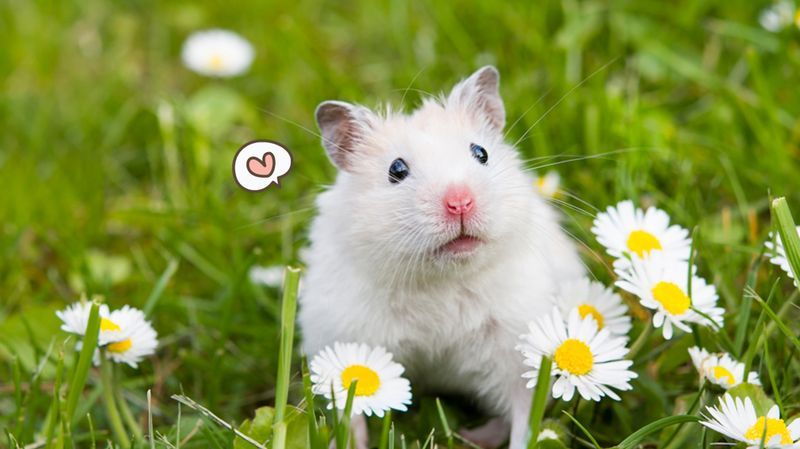
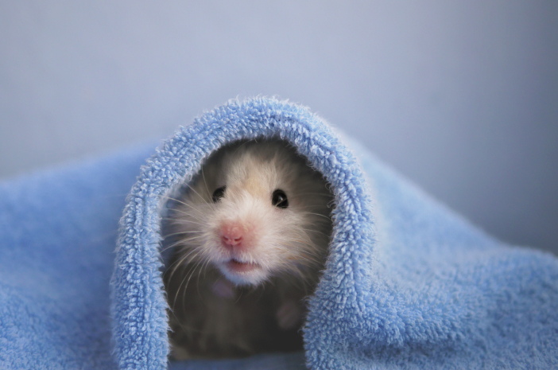
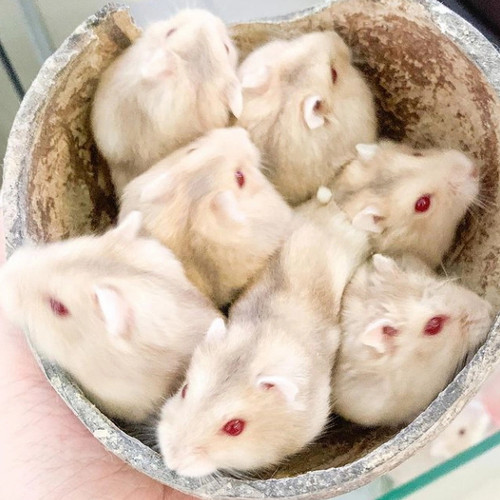
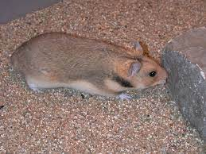
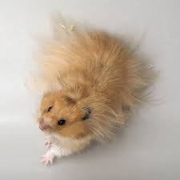

Beragam Jenis Hamster dan Cara Merawatnya

Ada banyak jenis jenis hamster yang cocok untuk dipelihara tidak hanya karena lucu namun juga karena warna yang beragam yang tentunya dapat menarik perhatian. kebanyakan orang pasti memilih jenis hamster yang dapat dengan cepat beradaptasi dengan manusia, hamster juga terkadang suka menggigit namun gigitannya tidak begitu sakit lebih sakit digigit harimau kok hehe.
hewan pengerat bertubuh mungil dan lucu ini ada beberapa jenis yang hampir punah loh guys,dan ada juga jenis yang mudah kita temui di toko hewan peliharaan. jenisnya antara lain yaitu winter white, winter normal (biasa disebut winter white tiger), campbell, black mottled (panda), roborovski husky, roborovski white face dan roborovski normal, serta syirian long hair dan short hair.

dari sekian banyak jenis cara perawatannya hampir sama, dari pemeliharaan kandang, mainan, camilan, ruang luas untuk menjelajah, interaksi dengan manusia dan tidak sembarangan menyampurkan jenis hamster. pemilihan makanan hamster pun harus yang alami agar sehat dan aman, antara lain yaitu biji bijian dan sayur sayuran. walaupun hamster termasuk hewan pemakan segalanya tapi hamster memiliki sistem pencernaan yang tidak begitu kuat.
Jenis Jenis Hamster
-
Jenis Jenis Hamster Hybrid

hamster hybrid ini adalah jenis hamster hasil perkawinan antara jenis hamster campbell dan hamster winter white. jenis ini bukan jenis murni sehingga jumlahnya pun terancam, faktor lainnya karena dianggap mengurangi keaslian dua jenis hamster kawinannya. jenis ini biasanya dijual dengan harga 40ribu sampai 65ribu. biasanya bulunya berwarna cream dengan campuran abu abu, hamster hybrid terkenal sangat lincah dan suka bermain dengan manusia.
-
Jenis Jenis Hamster Romanian

Romanian hamster atau nama latin Mesocricetus Newtoni adalah jenis hamster langka lainnya. penyebabnya adalah karena habitat yang menjadi tempat tinggalnya, jenis ini tidak untuk dijual.
-
Jenis Jenis Hamster Brandt's

jenis ini semakin berkurang di habitat aslinya, yaitu di padang rumput Stepa dan pegunungan di Eropa Tenggara serta Timur Tengah bagian utara. jenis ini juga tidak untuk dijual.
-
Jenis Jenis Hamster Surian atau Syrian

secara global hamster ini disebut Golden Hamster. sekarang, jenis ini sudah jarang ditemukan karena hampir punah. warna tubuhnya kebanyakan berwarana coklat muda keemasan dengan ukuran lebih besar dari jenis lainnya. ukuran tubuh hamster syrian dewasa bisa mencapai 17cm, harganya beragam dimulai dari 20ribu per ekornya.
halaman
pertama
berisi jenis jenis hamster dan halaman
kedua
berisi cara merawat hamster
©miloucing